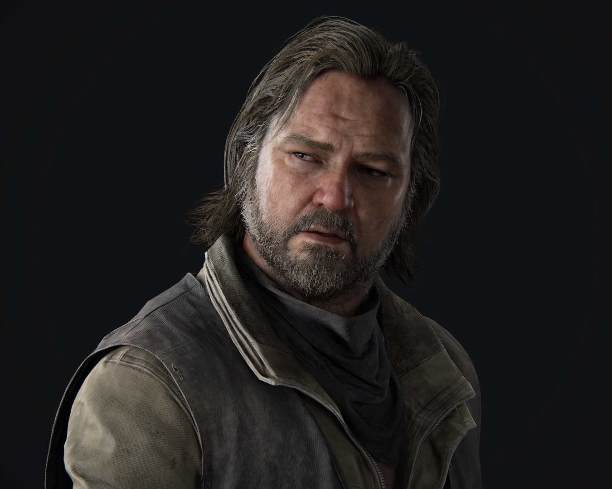
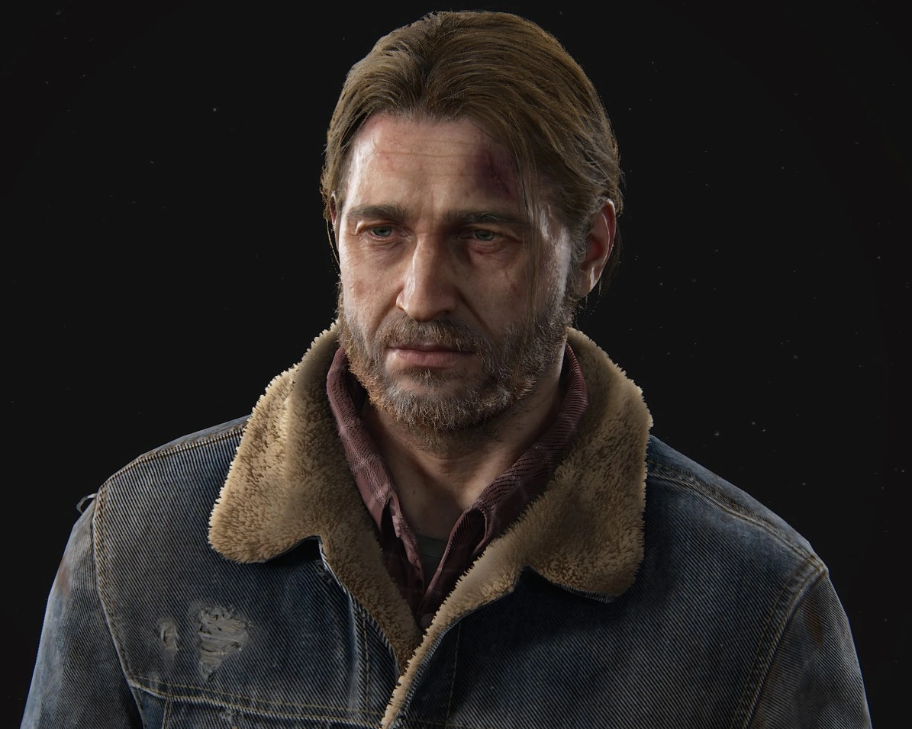

| Foto |
Nombre |
Descripción |
 |
Joel |
Un hombre curtido por la vida que debe enfrentarse a un mundo hostil tras un evento devastador. |
 |
Ellie |
Una joven valiente e ingeniosa que ha crecido en un mundo donde la supervivencia es lo único que importa. |
 |
Tess |
Aliada de Joel, con quien comparte un pasado complicado y una determinación inquebrantable. |
|  |
Bill |
Un superviviente astuto y desconfiado que ha logrado mantenerse a salvo en un mundo implacable. |
|  |
Tommy |
El hermano de Joel, un hombre con sus propias creencias y un pasado ligado a los eventos del juego. |